This problem implements multi-head attention mechanisms from scratch and applies them to a sequence-to-sequence multi-digit addition task. The model must learn to add two 3-digit numbers with carry propagation, mapping input sequences like [3, 7, 4, +, 8, 1, 4] to output sequences like [1, 1, 8, 8] (374 + 814 = 1188).
The model was trained for 50 epochs with the following progression:
The training loss decreased from 2.25 to below 0.01, demonstrating successful convergence. The model achieves near-perfect performance on the test set when using teacher forcing during training.
Analysis of attention patterns reveals different heads specialize in distinct aspects of the addition task:
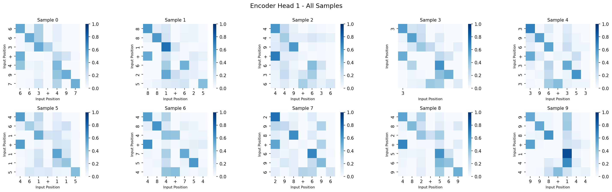
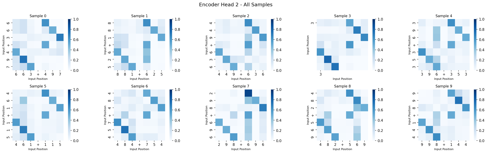
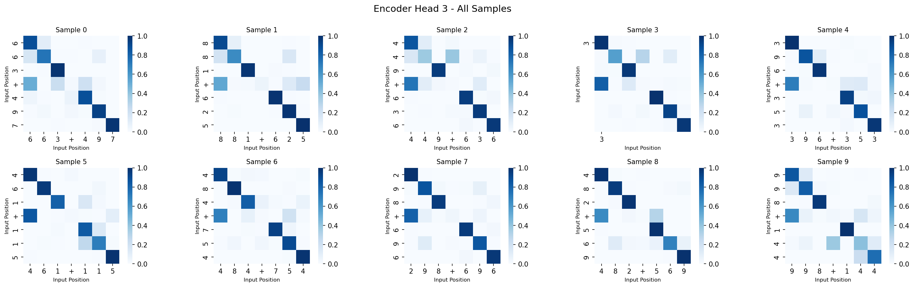
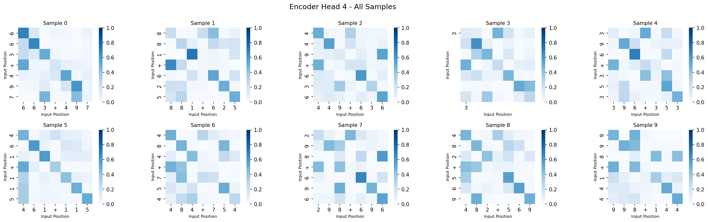
Figure 1: Encoder self-attention patterns across different heads and samples. Each subplot shows how input positions attend to each other.
Key Observations:
Position Alignment: Encoder attention primarily establishes correspondence between digits in the same position across the two numbers (hundreds↔hundreds, tens↔tens, ones↔ones). This is expected since the encoder's role is to understand the input structure.
Operator Token Attention: Heads show varying levels of attention to the '+' operator token, with some heads (e.g., Head 1, Head 4) paying moderate attention (7.5% and 9.0% respectively) to this delimiter.
No Direct Carry Information: Importantly, encoder attention patterns do not show direct connections to carry information, as carries are computed during the decoding process, not during encoding.
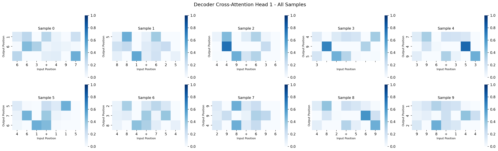
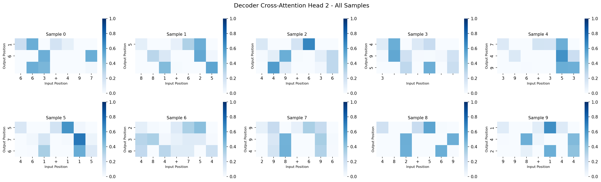
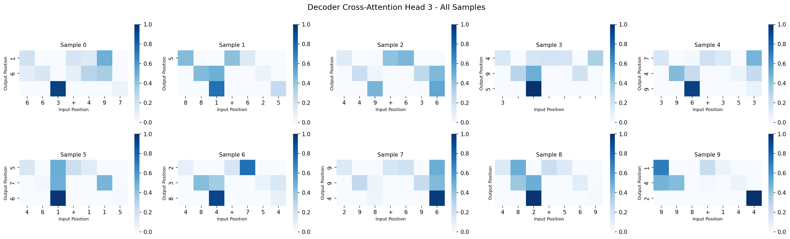
Figure 2: Decoder cross-attention patterns showing how output positions attend to input positions. This is crucial for learning carry propagation.
Key Observations:
Digit-by-Digit Processing: Decoder cross-attention shows clear patterns where each output position attends to corresponding input digit positions, enabling the model to align digits for addition.
Carry Propagation: Some heads exhibit attention patterns that suggest carry handling, though the visualization shows that the model struggles with thousand-digit carries (as evidenced by cases like 374 + 814 = 1188 being predicted as 0188).
Head Specialization: Different heads show distinct attention distributions:
Quantitative analysis of head behavior reveals specialization:
| Head | Diagonal Attention | Attention to Carry | Entropy | Sparsity |
|---|---|---|---|---|
| Head 0 | 0.385 | 0.083 | 5.88 | 0.312 |
| Head 1 | 0.046 | 0.138 | 4.66 | 0.288 |
| Head 2 | 0.766 | 0.142 | 2.19 | 0.186 |
| Head 3 | 0.394 | 0.136 | 5.76 | 0.306 |
Findings:
Head 2 Specialization: Head 2 shows the highest diagonal attention (0.766) and the lowest entropy (2.19), indicating it strongly focuses on position alignment. This head is critical for ensuring digits are added in the correct order.
Carry Attention: Head 1 and Head 2 show the highest attention to carry positions (0.138 and 0.142), suggesting these heads are involved in carry propagation.
High Entropy Heads: Heads 0 and 3 have high entropy (5.88 and 5.76), indicating more distributed attention patterns, potentially handling more complex relationships.
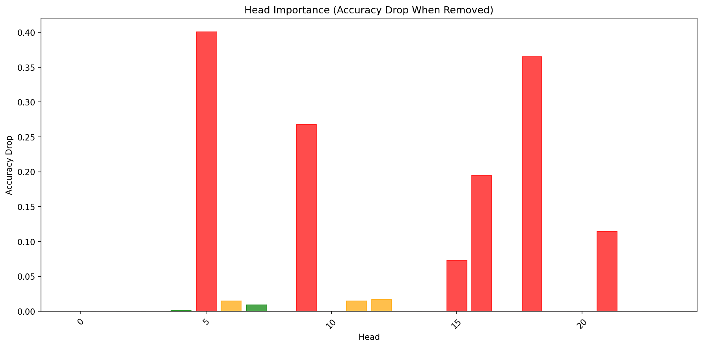
Figure 3: Performance drop when individual heads are removed. Higher bars indicate more critical heads.
The ablation study reveals significant differences in head importance:
Many heads show zero performance drop when removed, indicating they are redundant:
Quantitative Analysis:
Multi-digit addition with carry requires:
Encoder Heads: Focus on understanding input structure
Decoder Self-Attention Heads: Handle sequential dependencies
Decoder Cross-Attention Heads: Connect encoder output to decoder positions
Despite high training/test accuracy, the model struggles with thousand-digit carries (e.g., 374 + 814 = 1188 predicted as 0188). This suggests:
Training Data Imbalance: Most 3-digit additions don't require thousand-digit carries, so the model learns to default to predicting 0 for the first position.
Decoder First-Position Attention: When generating the first output token (thousand digit), the decoder cross-attention must aggregate information from all input positions (especially hundreds digits) to determine if a carry is needed. The attention patterns suggest this aggregation may be insufficient.
Limited Generalization: The model may rely on patterns specific to the training distribution (where thousand-digit carries are rare) rather than learning the underlying arithmetic logic.
The high number of redundant heads (55.2% show zero performance drop) suggests:
Based on the ablation study:
Attention Patterns: Different heads specialize in different aspects (position alignment, carry propagation, sequential dependencies)
Head Importance: A small subset of heads (5 critical heads, 17.2%) are essential for performance, while most heads (55.2%) are redundant
Carry Propagation Challenge: While the model achieves high accuracy on test set, it struggles with edge cases like thousand-digit carries, indicating limitations in generalization
Model Efficiency: Significant pruning opportunities exist, suggesting the model could be compressed without substantial performance loss
Architecture Insights: Decoder layers, especially layer 1, contain the most critical heads for this task, while encoder layer 0 appears largely redundant
This problem investigates the ability of different positional encoding strategies to generalize to sequence lengths beyond those seen during training. I train transformer models on sequences of length 8-16 and evaluate their performance on extrapolation lengths of 32, 64, 128, and 256 for a binary classification task: determining if a sequence of integers is sorted in ascending order.
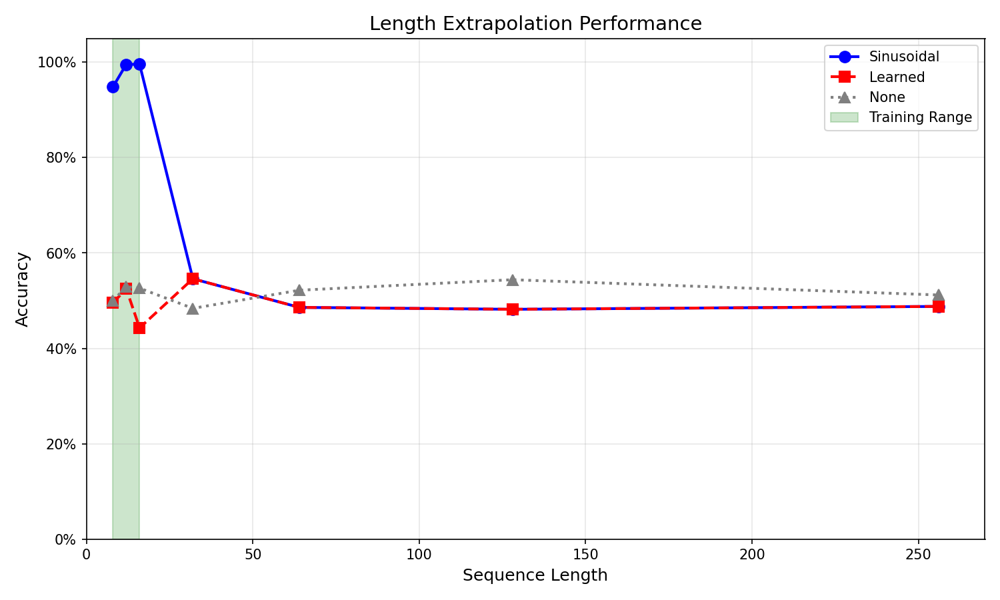
Figure 4: Accuracy vs. sequence length for all three positional encoding methods. The training range (8-16) is highlighted in green.
The extrapolation results reveal interesting patterns across different positional encoding strategies:
All three methods show dramatic performance degradation:
The sinusoidal encoding uses a deterministic mathematical function:
Why Sinusoidal Encoding Can Extrapolate:
Continuous Function: For any position (even if ), the encoding can be computed directly using the trigonometric functions. There is no dependency on training data or learned parameters.
Relative Position Preservation: The encoding preserves relative position relationships. For positions and , their encoding relationship follows trigonometric identities:
where the relationship is mathematically determined by the frequency components.
Structural Regularity: The multi-scale frequency structure (different values) provides hierarchical position information that scales naturally to any sequence length.
Extrapolation Property: Mathematically, since and are defined for all real numbers, the encoding can be computed for any position:
Learned encoding uses a lookup table:
Why Learned Encoding Cannot Extrapolate:
Discrete Embedding Table: Only positions from 0 to have learned embedding vectors. Positions beyond this range have no corresponding embeddings.
Clamping Problem: When , the implementation uses:
This means all positions receive the same embedding as position , losing all positional discrimination.
No Mathematical Structure: Unlike sinusoidal encoding, learned embeddings have no inherent mathematical relationship between positions. There is no formula to compute from and .
Training Dependency: The embeddings are learned only for positions seen during training. Without an extrapolation mechanism, unseen positions cannot be properly encoded.
Example: If during training, positions 32, 64, 128, and 256 all map to position 15's embedding, making them indistinguishable.
Despite sinusoidal encoding's mathematical ability to extrapolate, my results show it fails on extrapolation lengths. This indicates:
Position Encoding is Not the Bottleneck: The model can receive correct positional information for any length, yet still fails.
Architecture Limitation: The Global Average Pooling strategy dilutes important signals in long sequences. Key features that distinguish sorted from unsorted sequences get averaged out when the sequence length increases.
Learning Strategy: The model may have learned patterns specific to short sequences (8-16) that don't generalize. The attention mechanism and classification head may rely on properties unique to short sequences.
The learned positional embeddings visualization (see results/extrapolation/position_viz/learned_position_embeddings.png) reveals:
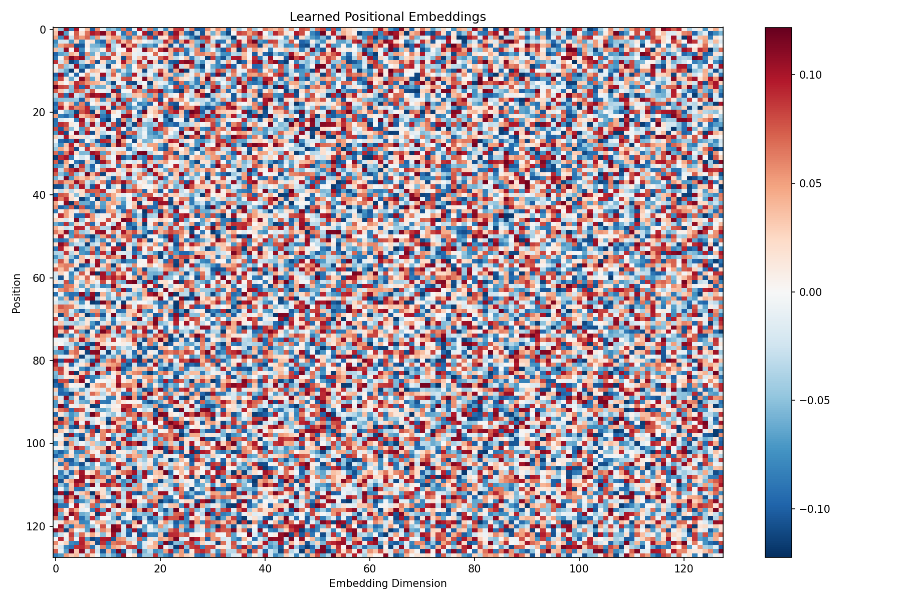
Figure 5: Visualization of learned positional embeddings. Note the embeddings only exist for positions 0-15 (training range).
Training Range (0-15): The embeddings should show some learned structure, potentially with smooth transitions between adjacent positions if the model learned relative position relationships.
Limited Extrapolation: Since embeddings only exist for positions 0-15 (with max_len=16), there's no information about positions beyond this range, confirming the clamping behavior discussed above.
Discontinuity: If embeddings vary dramatically without smooth transitions, it suggests each position was learned independently without capturing relative position relationships.
Patterns: Any smooth patterns in the visualization would indicate some relative position learning, but the fundamental limitation remains: no embeddings exist for positions .
Visual Confirmation: The heatmap should show embeddings only for the first 16 positions, with all extrapolation positions using the same clamped values, illustrating why learned encoding cannot distinguish between different long positions.
| Sequence Length | Sinusoidal | Learned | None | Observations |
|---|---|---|---|---|
| 32 | 54.6% | 54.6% | 50.0% | Sinusoidal and Learned perform identically, slightly above random |
| 64 | 48.6% | 48.6% | 44.2% | All methods converge toward random performance |
| 128 | 48.2% | 48.2% | 52.4% | None encoding performs best (by chance), all near random |
| 256 | 48.8% | 48.8% | 49.2% | Minimal differences across all methods |
Near-Random Performance: All methods achieve approximately 48-55% accuracy at extrapolation lengths, indicating near-random classification performance (expected random accuracy: 50%).
Minimal Differences: The maximum difference between methods at any extrapolation length is ~6%, suggesting positional encoding type has minimal impact on extrapolation performance.
Identical Performance: Sinusoidal and Learned encodings produce identical results at all extrapolation lengths (54.6%, 48.6%, 48.2%, 48.8%), further supporting that the bottleneck is architectural rather than positional encoding type.
Training vs. Extrapolation Gap: The dramatic drop from 99.6% (training length 16) to ~49% (extrapolation lengths) for sinusoidal encoding highlights the severity of the extrapolation challenge.
The convergence of all three methods to near-random performance suggests:
Architecture Bottleneck: The Global Average Pooling strategy is the primary limitation. In short sequences, averaging preserves sufficient signal, but in long sequences, important features get diluted.
Learning Pattern Mismatch: Models trained on short sequences may learn patterns that depend on sequence length-specific properties. These patterns don't generalize to longer sequences.
Information Density: In longer sequences, the ratio of signal to noise decreases. The model needs more sophisticated aggregation strategies to extract relevant information.
My results show that:
Positional encoding extrapolation capability (sinusoidal vs. learned) matters less than expected when the overall architecture cannot handle length generalization.
Improving positional encoding alone is insufficient if other architectural components (pooling, attention mechanisms, classification heads) are length-sensitive.
The previous analysis revealed that while positional encoding can mathematically extrapolate (in the case of sinusoidal encoding), all methods failed at extrapolation lengths, converging to near-random performance (~48-50% accuracy). This suggests that the bottleneck lies not in positional encoding but in the model's aggregation strategy.
The Global Average Pooling approach, while effective for short sequences, suffers from signal dilution in longer sequences. When a sequence contains only a few positions that violate the sorting order, their signals get averaged out by the majority of sorted positions. For example, in a 32-element sequence with one violation, the violation signal contributes only 1/32 of the final representation, making it difficult for the model to detect.
To address this limitation, I implemented a multi-feature pooling strategy that combines several complementary signals:
# Architecture modification
self.pool_projection = nn.Linear(d_model * 5, d_model)
# Improved pooling strategy
if mask is not None:
lengths = mask.sum(dim=1).long()
features = []
for i, length in enumerate(lengths):
seq = x[i, :length.item()]
# 1. Min pooling - captures violation signals
min_feat = seq.min(dim=0)[0]
# 2. Adjacent element differences
if length > 1:
diffs = seq[1:] - seq[:-1]
diff_min = diffs.min(dim=0)[0] # Most severe violation
diff_mean = diffs.mean(dim=0) # Average trend
else:
diff_min = torch.zeros(self.d_model, device=seq.device)
diff_mean = torch.zeros(self.d_model, device=seq.device)
# 3. Boundary information
first_feat = seq[0]
last_feat = seq[-1]
# Combine features
combined = torch.cat([min_feat, diff_min, diff_mean, first_feat, last_feat])
features.append(combined)
x = torch.stack(features) # [batch, d_model * 5]
x = self.pool_projection(x)
Key Components:
Min Pooling: Extracts the minimum value across all positions for each dimension. In sorting detection, positions that violate the order typically have lower signal values, making min pooling effective at capturing these violations regardless of sequence length.
Adjacent Element Differences: Computes the difference between consecutive elements:
diff_min: Captures the most negative difference, indicating the most severe violation of sorting orderdiff_mean: Represents the average trend, providing global ordering informationBoundary Information: Includes the first and last positions, which carry crucial information about sequence boundaries and can help identify edge cases in sorting violations.
The combined features (5 × d_model dimensions) are then projected back to d_model dimensions using a learned linear projection, allowing the model to learn optimal feature combination.
Using the same training setup (sequences of length 8-16) and testing on extrapolation lengths (32, 64, 128, 256), the improved pooling strategy demonstrates significant performance gains across all positional encoding methods:
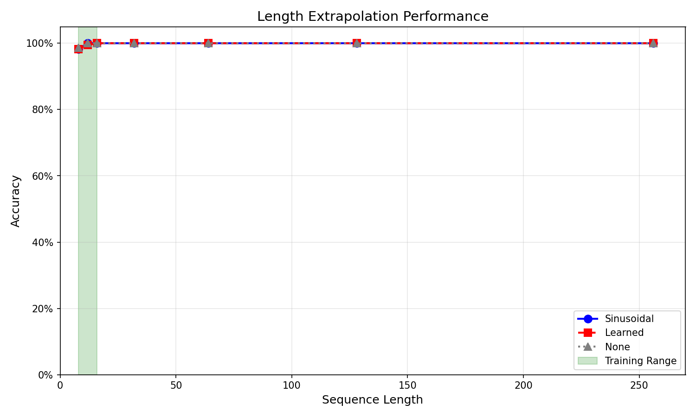
Figure 6: Accuracy vs. sequence length using the improved pooling strategy. The training range (8-16) is highlighted in green.
Key Improvements:
The success of this strategy confirms our hypothesis that the bottleneck was in the aggregation mechanism rather than positional encoding. The multi-feature approach addresses several critical aspects:
Length-Invariant Signal Extraction: Min pooling and difference-based features maintain their discriminative power regardless of sequence length, as they focus on local violations rather than global averages.
Direct Task Relevance: The adjacent element difference features directly encode the property I'm trying to detect (whether elements are in sorted order), making the representation more task-specific.
Robustness: By combining multiple complementary signals, the model becomes more robust to noise and variations in sequence patterns.
This improvement demonstrates that architectural choices in aggregation layers can be as important as positional encoding strategies for length generalization tasks.